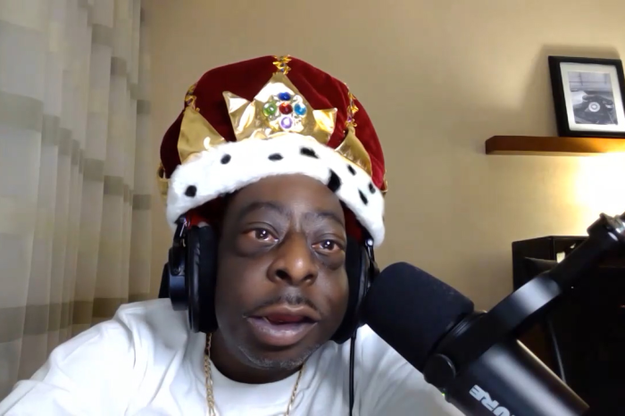

 He returns! Beetlejuice, the man who many consider to be the greatest Wack Packer of all time, reemerged Tuesday for his first Stern Show appearance since 2016. From a Georgia hotel room with his longtime manager Bobby, Beetlejuice told Howard and co-host Robin Quivers everything he's been up to since his last visit. And, while Howard assumed his sister was taking care of him as well as their elder mother, the Wack Packer revealed that's only partially true. “I'm taking care of [them] too, all three of us,” he explained before claiming to be even older than his own mom.
“You look much younger, and you look fantastic,” Howard marveled in response.
With over two million Instagram followers, Beetlejuice's social media fanbase has gotten bigger and younger—including Howard's nephew. “I think he's doing the right thing,” the Wack Packer said of his follower. “We're friends … wherever he goes, I go.”